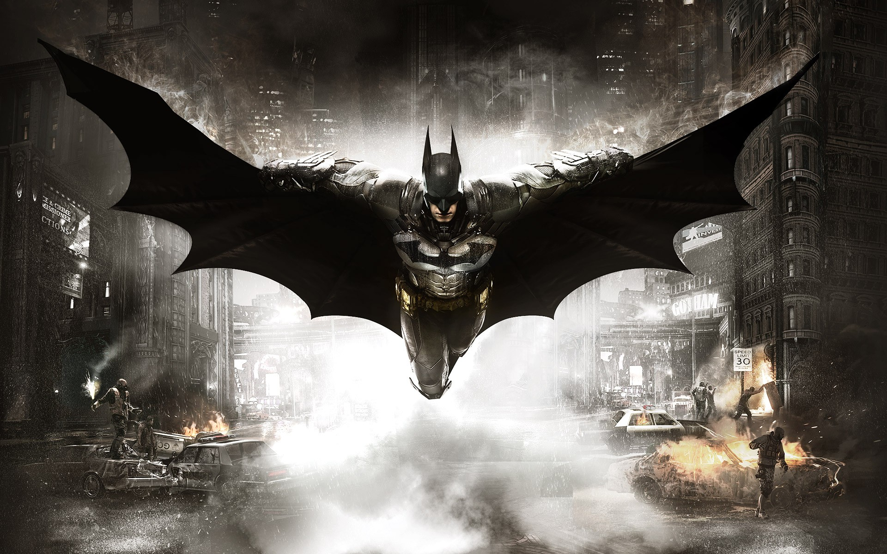

DC Characters
All the Justice League Hero`s
Batman aka: Bruce Wayne
Batman's secret identity is Bruce Wayne, an American billionaire, playboy, philanthropist, and owner of Wayne Enterprises. After witnessing the murder of his parents as a child, he swore revenge on criminals, an oath tempered by a sense of justice. Wayne trains himself both physically and intellectually and crafts a bat-inspired persona to fight crime. Batman operates in the fictional Gotham City, with assistance from various supporting characters, including his butler Alfred, police commissioner Jim Gordon, and vigilante allies such as Robin. Unlike most superheroes, Batman does not possess any superpowers; rather, he relies on his genius intellect, physical prowess, martial arts abilities, detective skills, science and technology, vast wealth, provocation of fear and intimidation, and an indomitable will. A large assortment of villains make up Batman's rogues gallery, including his archenemy the Joker.

Superman aka: Clark Kent
Superman's appearance is distinctive and iconic; he usually wears a blue costume, red cape, and stylized red-and-yellow "S" shield on his chest.[3][4][5] This shield is used in a myriad of media to symbolize the character.[6] The origin story of Superman relates that he was born Kal-El on the planet Krypton, before being rocketed to Earth as an infant by his scientist father Jor-El, moments before Krypton's destruction. Discovered and adopted by a Kansas farmer and his wife, the child is raised as Clark Kent and imbued with a strong moral compass. Very early on he started to display various superhuman abilities, which, upon reaching maturity, he resolved to use for the benefit of humanity through a secret "Superman" identity. Superman resides and operates in the fictional American city of Metropolis. As Clark Kent, he is a journalist for the Daily Planet, a Metropolis newspaper. Superman's love interest is generally Lois Lane, and his archenemy is supervillain Lex Luthor. He is typically a member of the Justice League and close ally of Batman and Wonder Woman. Like other characters in the DC Universe, several alternate versions of Superman have been produced.

The Flash aka: Barry Allen
Born on October 8, to Henry and Nora Allen, Barry Allen is a police scientist (his job title was changed to a forensic scientist in The Flash: Iron Heights one-shot) with a reputation for being very slow, and frequently late, which frustrates his fiancee, Iris West. One night, as he is preparing to leave work, a lightning bolt shatters a case full of chemicals and spills all over Allen. As a result, Allen finds that he can run extremely fast and has matching reflexes. He dons a set of red tights sporting a lightning bolt (reminiscent of the original Fawcett Comics Captain Marvel), dubs himself the Flash (after his childhood comic book hero, Jay Garrick), and becomes Central City's resident costumed crimefighter.[1] Central City University professor Ira West (Iris' adoptive father) designed Allen's costume and the ring which stores it while Allen is in his civilian identity.[3] The ring can eject the compressed clothing when Allen needs it and suck it back in with the aid of a special gas that shrinks the suit. In addition, Allen invented the cosmic treadmill, a device that allowed for precise time travel and was used in many stories. Allen was so well liked that nearly all speedsters that come after him are often compared to him. Batman once said "Barry is the kind of man that I would've hoped to become if my parents hadn't been murdered
Green Arrow aka: Oliver Queen
Green Arrow is a fictional superhero who appears in comic books published by DC Comics. Created by Morton Weisinger and designed by George Papp, he first appeared in More Fun Comics #73 in November 1941. His real name is Oliver Queen, a billionaire businessman and owner of Queen Industries, also a well-known celebrity in his locale of Star City.[2] Sometimes shown dressed like Robin Hood, Green Arrow is an archer who uses his skills to fight crime in his home cities of Star City and Seattle, as well as alongside his fellow superheroes as a member of the Justice League. Though much less frequently used in modern stories, he also deploys a range of trick arrows with various special functions, such as glue, explosive-tipped, grappling hook, flash grenade, tear gas and even kryptonite arrows for use in a range of special situations. At the time of his debut, Green Arrow functioned in many ways as an archery-themed analogue of the very popular Batman character, but writers at DC subsequently developed him into a voice of progressivism very much distinct in character from Batman.